%reload_ext tensorboard
%reload_ext autoreload
Normalising Manifold Flows¶
import os
import time
import math
import torch
import numpy as np
import torch.nn as nn
import pytorch_lightning as pl
import torch.nn.functional as F
import torch.distributions as tdist
import torchdyn.nn.node_layers as tdnl
from enum import Enum
from joblib import dump, load
from sklearn.decomposition import PCA
from pdmtut.core import GenerativeModel
from pytorch_lightning import loggers as pl_loggers
from regilib.core.distributions import MultivariateNormal
from regilib.core.dynamics.dynamics import RegularisedDynamics, StateDynamics
from regilib.core.dynamics.dynamical_state import DynamicalState
from regilib.core.invertible_modules import NormalisingFlow
from regilib.core.invertible_modules.charts import PadProj
from regilib.core.invertible_modules.bijective import ContinuousAmbientFlow, ContinuousManifoldFlow
store_results = True
load_models = True
Introduction¶
Implementation¶
# X_NMF_trainer.py was used for the training of this model
class NormalisingManifoldFlow(NormalisingFlow, pl.LightningModule, GenerativeModel):
class State(Enum):
"""State that the model is in."""
MANIFOLD_LEARNING = 1
DENSITY_LEARNING = 2
INFERENCE = 3
class FunctionDynamicsH(nn.Module):
""" Models the dynamics of the ambient flow on the manifold. """
def __init__(self):
super().__init__()
self._in_channels = 2
self._out_channels = 2
# expected format: N x (C * L)
# +1 for time
self.fc1 = nn.Linear(self.in_channels + 1, 128)
self.fc2 = nn.Linear(128, 256)
self.fc3 = nn.Linear(256, 256)
self.fc4 = nn.Linear(256, 128)
self.fc5 = nn.Linear(128, self.out_channels)
@property
def in_channels(self):
return self._in_channels
@property
def out_channels(self):
return self._out_channels
def forward(self, ds):
x = torch.cat([ds.state, ds.t], -1)
x = torch.tanh(self.fc1(x))
x = torch.tanh(self.fc2(x))
x = torch.tanh(self.fc3(x))
x = torch.tanh(self.fc4(x))
x = self.fc5(x)
return x
class FunctionDynamicsF(nn.Module):
""" Models the dynamics of the injection to the manifold. """
def __init__(self):
super().__init__()
self._in_channels = 3
self._out_channels = 3
# expected format: N x (C * L)
# +1 for time
self.fc1 = nn.Linear(self.in_channels + 1, 128)
self.fc2 = nn.Linear(128, 256)
self.fc3 = nn.Linear(256, 256)
self.fc4 = nn.Linear(256, 128)
self.fc5 = nn.Linear(128, self.out_channels)
@property
def in_channels(self):
return self._in_channels
@property
def out_channels(self):
return self._out_channels
def forward(self, ds):
x = torch.cat([ds.state, ds.t], -1)
x = torch.tanh(self.fc1(x))
x = torch.tanh(self.fc2(x))
x = torch.tanh(self.fc3(x))
x = torch.tanh(self.fc4(x))
x = self.fc5(x)
return x
def __init__(self, chart=PadProj()):
super().__init__(
base_distribution=MultivariateNormal(torch.zeros(2), torch.eye(2))
)
# state=[l, e, n | state]
self.aug1 = tdnl.Augmenter(augment_dims=3)
self.af1 = ContinuousAmbientFlow(
dynamics=RegularisedDynamics(
fdyn=NormalisingManifoldFlow.FunctionDynamicsH()
),
sensitivity='autograd', default_n_steps=5
)
self.mf1 = ContinuousManifoldFlow(
chart=chart, dynamics=StateDynamics(
fdyn=NormalisingManifoldFlow.FunctionDynamicsF()
),
sensitivity='autograd', default_n_steps=5
)
self.state = NormalisingManifoldFlow.State.INFERENCE
# Region NormalisingFlow
def forward(self, x, af_estimate=True, mf_skip=True):
ds = x.clone() if isinstance(x, DynamicalState) else DynamicalState(state=x)
# p(z)
ds = super().forward(ds)
# u=h(z)
ds = self.af1.dynamics.update_ds(ds, self.aug1(ds['state']))
ds = self.af1.forward(ds, estimate_trace=af_estimate)
# x=g(u)
ds = self.mf1.forward(ds, skip_jacobian_det=mf_skip)
return ds
def inverse(self, x, af_estimate=True, mf_skip=True):
ds = x.clone() if isinstance(x, DynamicalState) else DynamicalState(state=x)
# u=g⁻¹(x)
ds = self.mf1.inverse(ds, skip_jacobian_det=mf_skip)
# z=h⁻¹(u)
ds = self.af1.dynamics.update_ds(ds, self.aug1(ds['state']))
ds = self.af1.inverse(ds, estimate_trace=af_estimate)
# p(z)
ds = super().inverse(ds)
return ds
# Region GenerativeModel
def encode(self, X):
ds = self.inverse(X)
return ds['state'].cpu().detach()
def decode(self, z):
ds = self.forward(z)
return ds['state'].cpu().detach()
def save(self, path):
torch.save(self, os.path.join(path, 'model.pt'))
def load(path):
return torch.load(os.path.join(path, 'model.pt'))
def save_exists(path):
return (
os.path.isfile(os.path.join(path, 'model.pt')))
def log_likelihood(self, ds_x):
ds_z = self.inverse(ds_x, af_estimate=False, mf_skip=False)
return ds_z.log_prob.cpu().detach()
def sample_posterior(self, n_samples):
ds = super().sample_posterior(n_samples)
return ds['state'].detach().cpu()
# Region training
def fit_model(self, X, X_val=None, path=None):
start_time = time.time()
if path is None:
tb_logger = False
checkpoint_callback=False
# MANIFOLD PHASE
self.state = NormalisingManifoldFlow.State.MANIFOLD_LEARNING
self.mf1.freeze(False); self.af1.freeze(True)
if path is not None:
tb_logger = pl_loggers.TensorBoardLogger(
os.path.join(path, 'mp/'), version=0)
checkpoint_callback=True
trainer = pl.Trainer(
max_epochs=25000, gpus=1, logger=tb_logger,
checkpoint_callback=checkpoint_callback
)
trainer.fit(self, train_dataloaders=X, val_dataloaders=X_val)
# DENSITY PHASE
self.state = NormalisingManifoldFlow.State.DENSITY_LEARNING
self.mf1.freeze(True); self.af1.freeze(False)
if path is not None:
tb_logger = pl_loggers.TensorBoardLogger(
os.path.join(path, 'dp/'), version=0)
checkpoint_callback=True
trainer = pl.Trainer(
max_epochs=3000, gpus=1, logger=tb_logger,
checkpoint_callback=checkpoint_callback
)
trainer.fit(self, train_dataloaders=X, val_dataloaders=X_val)
# INFERENCE PHASE
self.state = NormalisingManifoldFlow.State.INFERENCE
elapsed_time = time.time() - start_time
if path is not None:
with open(os.path.join(path, 'training_time.txt'), 'w') as f:
f.write(str(elapsed_time))
# region training
def noise_enhance_data(self, x, b=0.1):
nu = torch.randn(x.shape[0], 3, device=x.device) * b
return x + nu
def train_step_g(self, x):
# add noise to data
x_prime = self.noise_enhance_data(x, b=0.01)
ds = DynamicalState(state=x_prime)
# project point to manifold
ds_u = self.mf1.inverse(ds, skip_jacobian_det=True)
# reconstruct point
ds_x = self.mf1.forward(ds_u, skip_jacobian_det=True)
mse = (x - ds_x['state']).pow(2).sum(-1)
# energy
loss = mse.sum() / (x.shape[0]*x.shape[1])
return loss
def train_step_h(self, x):
lambda_e, lambda_n = 0.01, 0.01
# logp(z_t1) = logp(z_t0) - \int_0^1 - Tr ∂f/∂z(t)
ds_z = self.inverse(x, af_estimate=True, mf_skip=True)
# negative log likelihood
loss = (
-ds_z.log_prob + lambda_e * ds_z.e[:, 0] + lambda_n * ds_z.n[:, 0]
).sum() / (x.shape[0]*x.shape[1])
return loss
def training_step(self, batch, batch_idx):
x = batch[0]
x = x + 1. # add +1 for numerical stability x ∈ [0, 2]
if self.state is NormalisingManifoldFlow.State.MANIFOLD_LEARNING:
loss = self.train_step_g(x)
if self.state is NormalisingManifoldFlow.State.DENSITY_LEARNING:
loss = self.train_step_h(x)
self.log('train_loss', loss)
return {'loss': loss}
def validation_step(self, batch, batch_idx):
x = batch[0]
x = x + 1. # add +1 for numerical stability x ∈ [0, 2]
if self.state is NormalisingManifoldFlow.State.MANIFOLD_LEARNING:
loss = self.train_step_g(x)
if self.state is NormalisingManifoldFlow.State.DENSITY_LEARNING:
loss = self.train_step_h(x)
self.log('validation_loss', loss)
return {'val_loss': loss}
def configure_optimizers(self):
optimizer = torch.optim.Adam(self.parameters(), lr=9e-5)
return optimizer
def __str__(self):
return 'nmf'
Experiment 1: swiss roll¶
import pyvista as pv
from pdmtut.datasets import SwissRoll
pv.set_plot_theme("document")
model_save_path = '../results/swiss_roll/nmf'
if store_results:
result_save_path = '../results/swiss_roll/nmf'
pv.set_jupyter_backend('None')
else:
pv.set_jupyter_backend('ipygany')
result_save_path = None
dataset = SwissRoll(n_samples=100**2, seed=11)
if load_models and NormalisingManifoldFlow.save_exists(model_save_path):
model = NormalisingManifoldFlow.load(model_save_path)
else:
model = NormalisingManifoldFlow()
model.fit_model(
X=dataset.train_loader(batch_size=512),
X_val=dataset.validation_loader(batch_size=512),
path=result_save_path)
if store_results:
model.save(model_save_path)
model = model.eval()
%tensorboard --logdir ../results/swiss_roll/nmf
Reusing TensorBoard on port 6006 (pid 96566), started 0:42:14 ago. (Use '!kill 96566' to kill it.)
Input Representation¶
from pdmtut.vis import plot_representation
z = model.encode(dataset.X+1)
z_extremes = model.encode(dataset.y_extremes+1)
z_extremes = torch.cat([z_extremes, z_extremes[[1,2]]])
plot_representation(z.numpy(), index_colors=dataset.index_colors, z_extremes=z_extremes, interpolate_background=True, root=result_save_path)
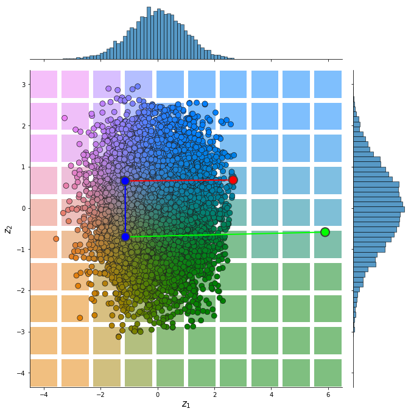
Input Reconstruction¶
from pdmtut.vis import plot_reconstruction
pv.set_jupyter_backend('None')
z = model.encode(dataset.X+1)
x = model.decode(z)
mse = (dataset.unnormalise_scale(dataset.X) - dataset.unnormalise_scale(x - 1)).pow(2).sum(-1).mean()
if result_save_path is not None:
with open(os.path.join(result_save_path, 'reconstruction.txt'), 'w') as f:
f.write(str(mse.item()))
mse
tensor(0.0002)
plot_reconstruction(dataset.unnormalise_scale(x - 1).numpy(), dataset.index_colors, root=result_save_path)
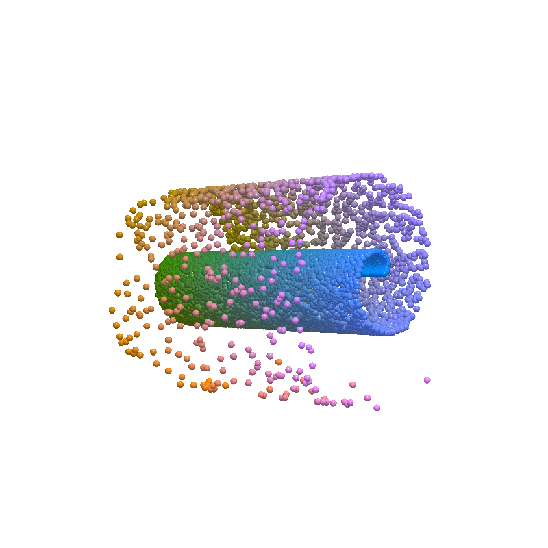
Density Estimation¶
from pdmtut.vis import plot_density
from regilib.core.invertible_modules.bijective import AffineTransform
log_likelihood = model.log_likelihood((dataset.X+1).clone().requires_grad_(True))
# unnormalise the data and compute the change in density
un_normalise = AffineTransform(dataset._mean, 1/dataset._std)
data = un_normalise.forward(DynamicalState(state=dataset.X.clone().requires_grad_(True), log_prob=log_likelihood.clone()))
data_log_likelihood = data.log_prob.mean()
if result_save_path is not None:
with open(os.path.join(result_save_path, 'density.txt'), 'w') as f:
f.write(str(data_log_likelihood.item()))
data_log_likelihood
tensor(-8.8804)
plot_density(data.state.detach().numpy(), data.log_prob.detach().numpy(), root=result_save_path)
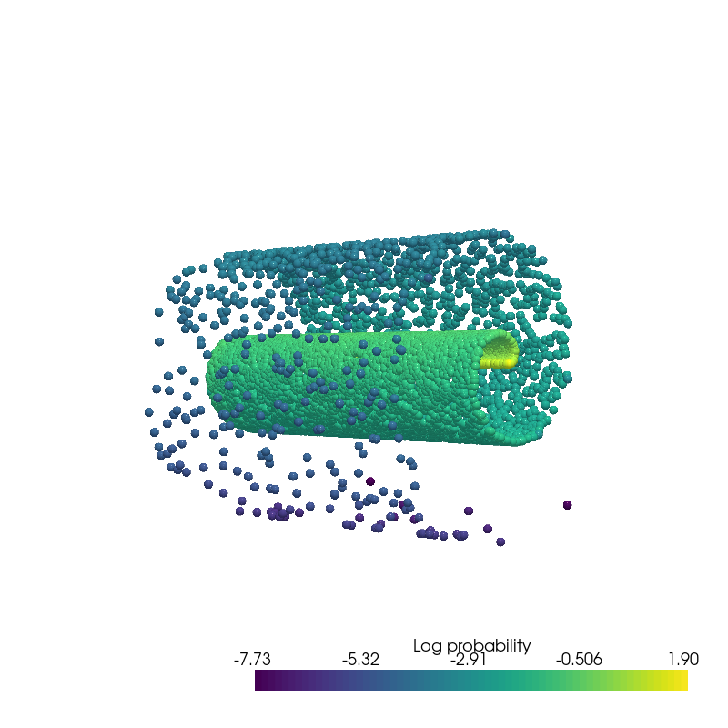
Generate Samples¶
from pdmtut.vis import plot_generated_samples
from regilib.core.invertible_modules.bijective import AffineTransform
generated_samples = model.sample_posterior(100**2).requires_grad_(True)
generated_samples_log_likelihood = model.log_likelihood(generated_samples)
# unnormalise the data and compute the change in density
un_normalise = AffineTransform(dataset._mean, 1/dataset._std)
data = un_normalise.forward(DynamicalState(state=generated_samples.clone().requires_grad_(True) - 1, log_prob=generated_samples_log_likelihood.clone()))
plot_generated_samples(data.state.detach().numpy(), data.log_prob.detach().numpy(), root=result_save_path)
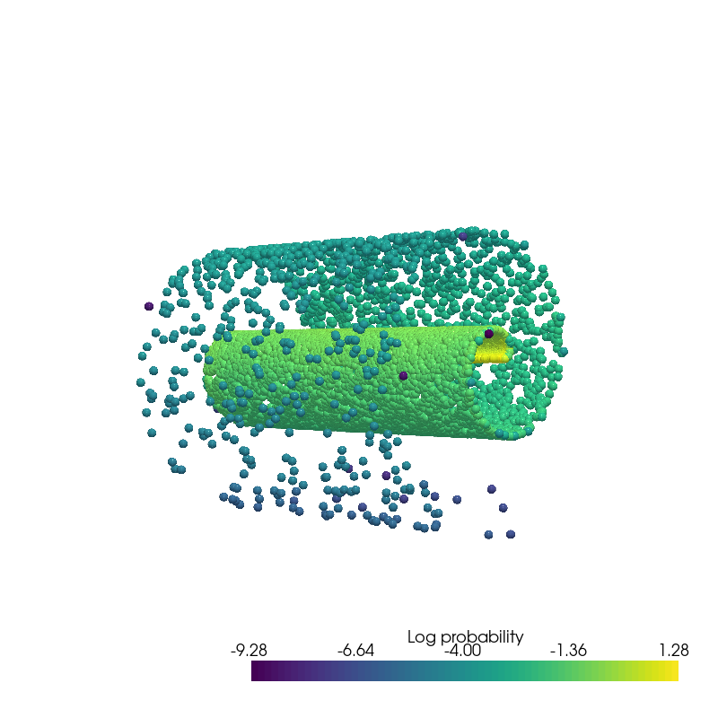
Interpolation¶
from pdmtut.vis import plot_interpolation
from scipy.interpolate import interp1d
z_extremes = model.encode(dataset.y_extremes+1)
uniform_state, uniform_log_prob, _ = dataset.sample_points_uniformly(n_samples=100**2, seed=11)
linfit1 = interp1d([1,20], z_extremes[:2].numpy(), axis=0)
linfit2 = interp1d([1,20], z_extremes[2:].numpy(), axis=0)
linfit3 = interp1d([1,20], z_extremes[[1,2]].numpy(), axis=0)
interpolated_points_1 = model.decode(torch.Tensor(linfit1(np.arange(1,21)))) -1
interpolated_points_2 = model.decode(torch.Tensor(linfit2(np.arange(1,21)))) -1
interpolated_points_3 = model.decode(torch.Tensor(linfit3(np.arange(1,21)))) -1
/home/bawaw/.conda/envs/pdm_tutorial/lib/python3.8/site-packages/torch/functional.py:445: UserWarning: torch.meshgrid: in an upcoming release, it will be required to pass the indexing argument. (Triggered internally at /opt/conda/conda-bld/pytorch_1639180588308/work/aten/src/ATen/native/TensorShape.cpp:2157.)
return _VF.meshgrid(tensors, **kwargs) # type: ignore[attr-defined]
plot_interpolation(
dataset.unnormalise_scale(interpolated_points_1).numpy(),
dataset.unnormalise_scale(interpolated_points_2).numpy(),
dataset.unnormalise_scale(interpolated_points_3).numpy(),
uniform_state.detach().view(100, 100, 3).permute(2, 0, 1).numpy(),
uniform_log_prob.numpy(), root=result_save_path
)
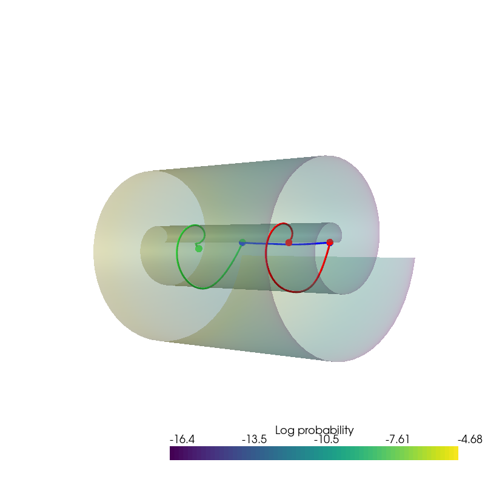
Extra¶
Reconstruction trajectory¶
n_steps = 100
with torch.no_grad():
# inverse trajecory
ds = model.mf1.inverse(DynamicalState(state=dataset.X+1), skip_jacobian_det=True, include_trajectory=True, steps=50)
traj_1=ds.trajectory
ds.remove_key('trajectory')
ds = model.af1.dynamics.update_ds(ds, model.aug1(ds['state']))
ds = model.af1.inverse(ds, estimate_trace=True, include_trajectory=True, steps=50)
ds = super(NormalisingManifoldFlow, model).inverse(ds)
ds_z = ds.clone()
traj_2 = torch.cat([ds.trajectory[:,:,-2:-1], torch.zeros(*ds.trajectory.shape[:-1],1), ds.trajectory[:,:,-1:]],-1)
z_traj = torch.cat([traj_1, traj_2], 0)
# forward trajectory
ds = super(NormalisingManifoldFlow, model).forward(DynamicalState(state=ds_z.state.clone()))
ds = model.af1.dynamics.update_ds(ds, model.aug1(ds['state']))
ds = model.af1.forward(ds, estimate_trace=True, include_trajectory=True, steps=50)
traj_1 = torch.cat([ds.trajectory[:,:,-2:-1], torch.zeros(*ds.trajectory.shape[:-1],1), ds.trajectory[:,:,-1:]],-1)
ds.remove_key('trajectory')
# x=g(u)
ds = model.mf1.forward(ds, skip_jacobian_det=True, include_trajectory=True, steps=50)
traj_2 = ds.trajectory
x_traj = torch.cat([traj_1, traj_2], 0)
def plot_traj_state(traj, t, file_name):
traj_state = traj[t]
pv.set_plot_theme("document")
pv.set_jupyter_backend('None')
plotter = pv.Plotter()
plotter.add_mesh(
pv.PolyData(dataset.unnormalise_scale(traj_state.detach() - 1).numpy()), render_points_as_spheres=True,
scalars=dataset.index_colors, rgb=True, point_size=5)
plotter.camera_position = [(-80, 0, 80), (0, 0, 0), (0, 1, 0)]
_ = plotter.show(window_size=[800, 800])
if result_save_path is not None:
plotter.screenshot(os.path.join(
result_save_path, file_name + '{}.png'.format(str(t).replace('.', '_'))))
for t in torch.linspace(0, n_steps-1, 5):
plot_traj_state(z_traj, int(t), file_name='base_representation_t_')
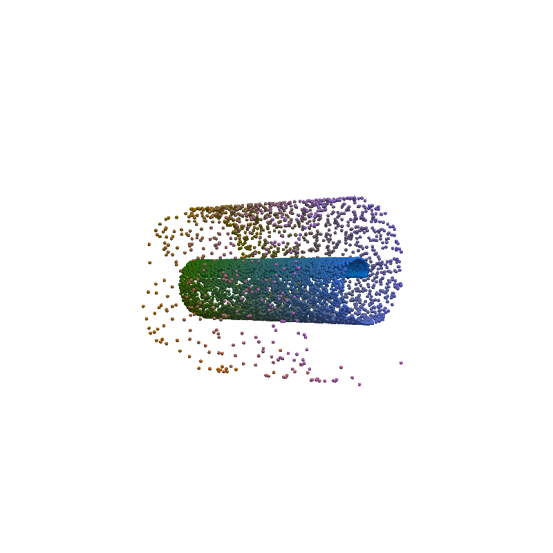
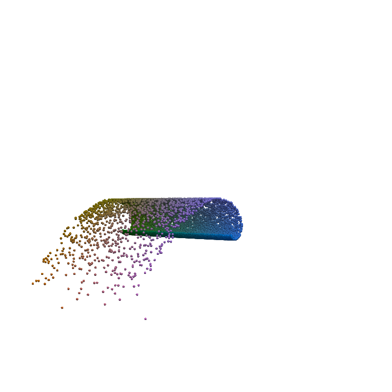
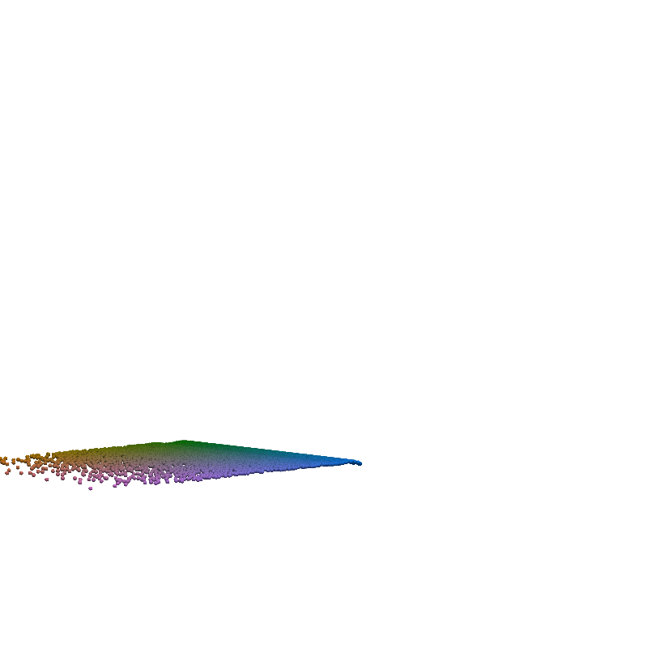
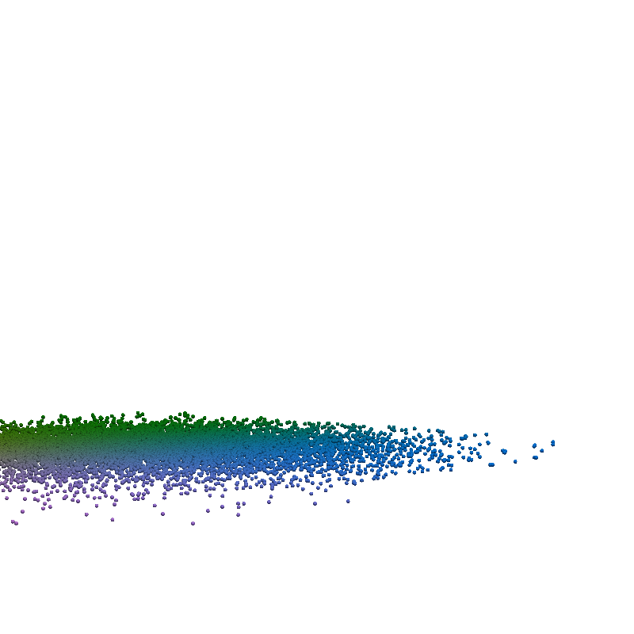
for t in torch.linspace(0, n_steps-1, 5):
plot_traj_state(x_traj, int(t), file_name='reconstruction_t_')
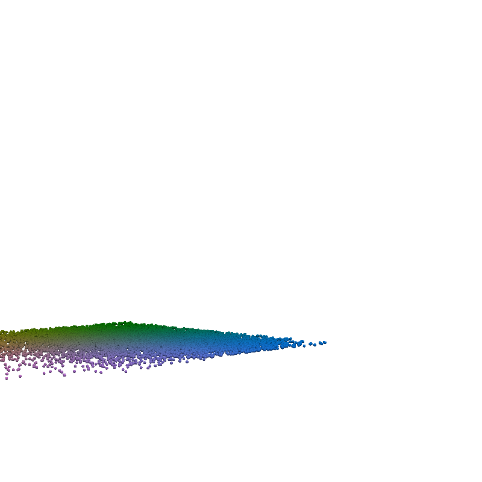
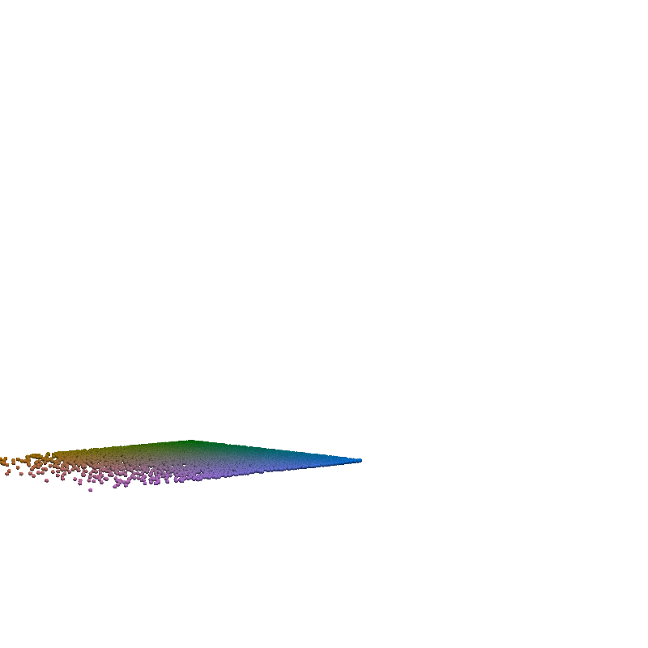
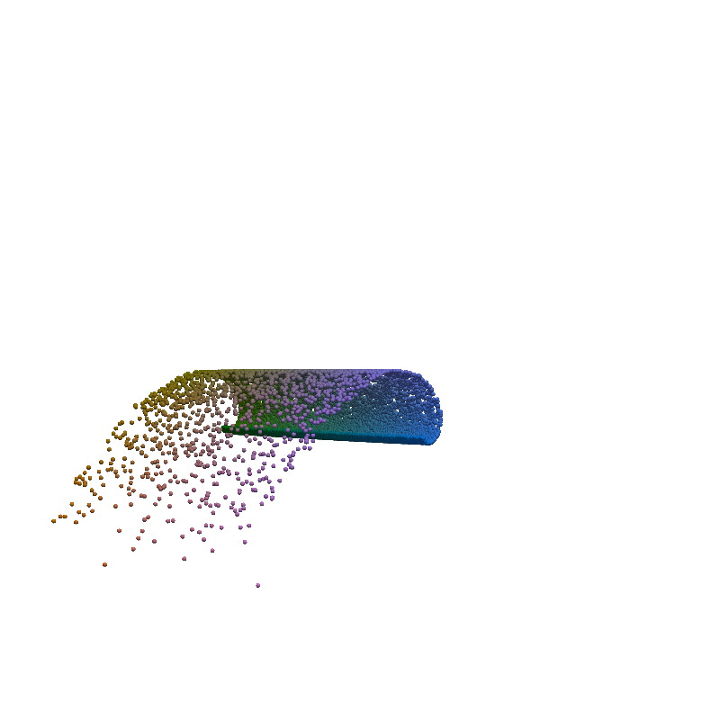
pv.set_jupyter_backend('None')
from regilib.vis.video_plotter import plot_video
if result_save_path is not None:
_ = plot_video(
z_traj.detach() -1, os.path.join(result_save_path, 'nmf_inverse.gif'), render_points_as_spheres=True, reverse=False,
camera_pos = [(-10, 0, 10), (0, 0, 0), (0, 1, 0)]
)
_ = plot_video(
x_traj.detach() -1, os.path.join(result_save_path, 'nmf_forward.gif'), render_points_as_spheres=True, reverse=False,
camera_pos = [(-10, 0, 10), (0, 0, 0), (0, 1, 0)]
)
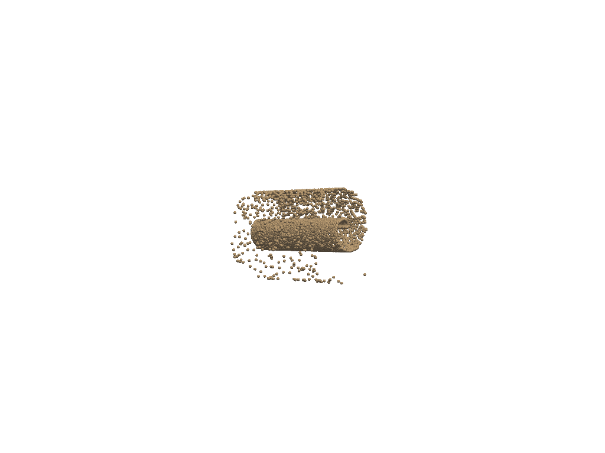
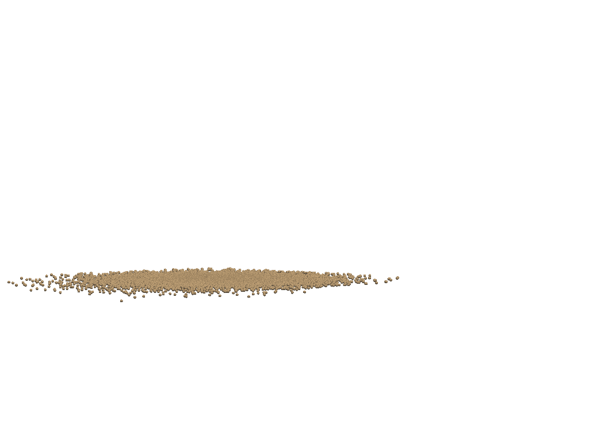